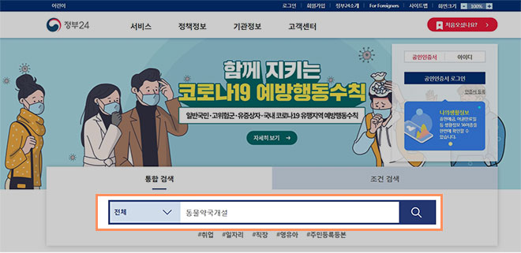
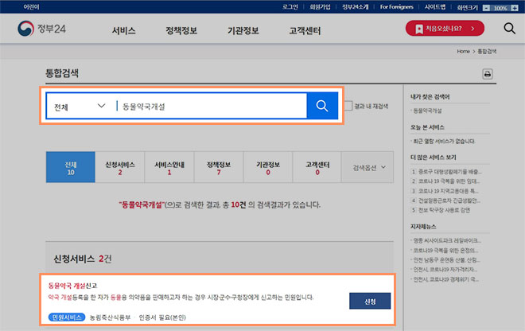
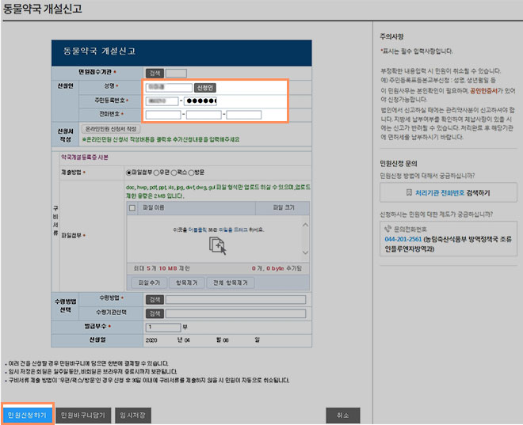

동물약국 개설등록 방법 안내
1) 민원 24사이트 접속(
http://www.gov.kr/portal/minwon
)
2) 민원 24 사이트 통합검색에
‘동물약국개설’ 검색 -> 동물약국 개설 등록 ‘신청’
버튼 클릭(회원/비회원 로그인 필요)
3) 노출된 등록 신청 팝업을 통해 동물약국 개설 등록 후
‘민원신청하기’
버튼 클릭
4) 동물약국 개설등록증 허가 완료 후 등록증을
theSHOP 팩스로 발송 (02-563-8396)
닫기